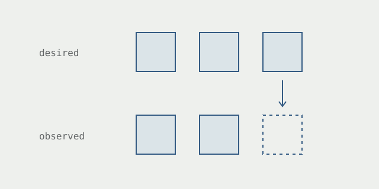

Kubernetes keeps putting things back
What happens after the deployment command finishes.
Set a Deployment to three replicas, then delete one of its Pods. A replacement appears. Change the replica count to two, and two becomes the target. The difference is where you made the change: the Pod was part of the current state; the Deployment describes the state Kubernetes should maintain.
A controller watches objects, compares what exists with what was requested, and makes changes. It keeps doing this as the cluster changes. The API server exposes the shared objects, so separate controllers can respond to one another’s work without one giant procedure coordinating every step. The controller documentation describes this arrangement.

A successful request is only the beginning
For a Deployment, the work passes through a ReplicaSet, which maintains the requested number of Pods. Updating the Pod template starts a rollout. With the default rolling-update strategy, a new ReplicaSet grows while the old one shrinks. There can be several intermediate states between submitting the change and having the updated application available.
That makes status worth reading. A valid specification can still request an image that cannot be downloaded, exceed a quota, or produce Pods that never become ready. Repeating the request does not fix those conditions. Kubernetes records the stalled rollout; exceeding its progress deadline does not automatically roll it back. These cases are covered in the Deployment documentation.
For an existing Deployment named api, check the rollout and inspect its conditions:
kubectl rollout status \
deployment/api
kubectl describe \
deployment apiStart with the gap between the requested state and the observed state. Then find the component that is failing to close it.